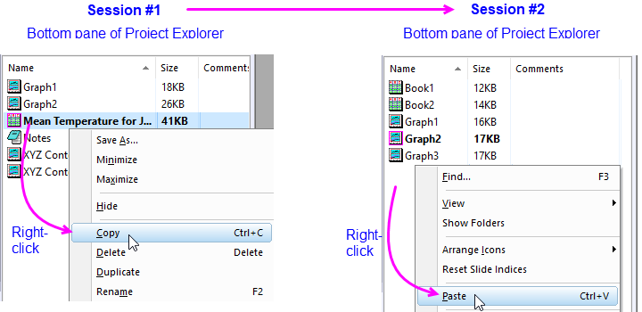

FAQ-427 Wie kombiniere ich Daten aus mehreren Origin-Projekten?
Import-data-from-Origin-OPJ
Letztes Update: 17.05.2023
Abhängig von Ihren Anforderungen gibt es mehrere Möglichkeiten, Daten aus separaten Origin-Dateien zu kombinieren.
Projektordner zwischen Origin-Sitzungen kopieren und einfügen
- Führen Sie zwei Origin-Sitzungen aus, eine mit einem Projekt und eine andere mit einem zweiten Projekt.
- Klicken Sie in der ersten Sitzung mit der rechten Maustaste auf einen Ordner im Projekt Explorer und wählen Sie Kopieren im Kontextmenü.
- Gehen Sie zur zweiten Origin-Sitzung, klicken Sie mit der rechten Maustaste auf einen Ordner und wählen Sie im Kontextmenü Einfügen. Der Ordner, der alle vorhandenen Fenster einschließt, wird als Unterordner in das aktuelle Projekt der zweiten Sitzung hinzufügt. (Hinweis: Vergessen Sie nicht, das aktuelle Projekt zu speichern, um die Änderungen zu erhalten.)

| Hinweis: Wir verwenden die Wörter "Sitzung" und "Instanz" im gleichen Sinn: Der Anwender führt das Origin-Programm zweimal aus, so dass Daten zwischen gleichzeitig geöffneten Projekten übertragen werden können. |
 | Wenn Sie einen Projektordner in ein zweites Projekt eingefügt haben, könnten Sie einen neuen Ordner erstellen speziell zum Kombinieren nur der Fenster, mit denen Sie in der aktuellen Sitzung arbeiten möchten. Siehe Projekt Explorer. |
Origin-Arbeitsmappenfenster innerhalb oder zwischen Origin-Sitzungen kopieren und einfügen
- Öffnen Sie den Projekt Explorer (PE), klicken Sie im unteren Bedienfeld mit der rechten Maustaste auf die gewünschte Arbeitsmappe und wählen Sie Kopieren.
- Markieren Sie einen anderen Ordner im gleichen Projekt (innerhalb der Sitzung) oder markieren Sie einen Ordner in einem anderen Projekt (zwischen Sitzungen), klicken Sie in einem leeren Bereich des unteren Bedienfelds des PE mit der rechten Maustaste und wählen Sie Einfügen.
- 
Daten aus einem anderen Projekt oder Arbeitsblattfenster importieren
Dies ermöglicht den Import von ausgewählten Arbeitsblattdaten aus einem anderen Projekt.
- Wählen Sie bei aktiver Arbeitsmappe Daten: Mit Datei verbinden: Origin-Datei, um den Origin-Konnektor zu öffnen.
- Navigieren Sie zu Ihrer Projektdatei (.OPJ/.OPJU). Alle Blätter im Projekt werden als Zweigstruktur im linken Bedienfeld aufgelistet. Wenn Sie dann ein bestimmtes Blatt auswählen, erhalten Sie eine Liste der Spalten dieses Blattes im rechten Bedienfeld.
- Klicken Sie doppelt auf das ausgewählte Blatt, um es zum unteren Bedienfeld hinzuzufügen, und klicken Sie auf OK, um zu importieren.
- Nach dem Import können Sie weitere Blätter immer mit dem Datennavigator importieren.
| Es gibt eine weitere X-Funktion, impOPJ, um ausgewählte Spalten der Arbeitsblattdaten aus einem anderen Projekt zu importieren.
Hilfe für den Dialog impOPJ erhalten Sie unter Ein Origin-Projekt importieren. |
Alle Daten in einem anderen Projekt anhängen
Diese Option lässt keinen selektiven Import von Daten zu. Vielmehr wird der gesamte Inhalt einer anderen OPJ-Datei an die aktuelle (offene) OPJ-Datei angehängt.
- Wählen Sie Datei: Anhängen oder klicken Sie mit der rechten Maustaste auf einen Ordner im Projekt Explorer und wählen Sie Projekt anhängen. Eine Erinnerungsmeldung fordert Sie auf, einen Ordner für die angehängte Datei zu erstellen oder die Datei an den aktuellen Ordner anzuhängen. In jedem Fall bleibt die Unterordnerstruktur der angehängten Datei erhalten.
Eine Origin-Fensterdatei öffnen
Dies ist eine Möglichkeit, Daten, die in einem alleinstehenden Arbeitsblatt (OGW) oder Diagrammfenster (OGG) gespeichert sind, in die aktuelle OPJ-Datei zu importieren.
- Wählen Sie Datei: Öffnen (oder Datei: Zuletzt verwendete Mappen oder Zuletzt verwendete Diagramme) und navigieren Sie zu Ihrer Origin-Fensterdatei. Sie können Fensterdateien auch per Drag&Drop verschieben.
Beachten Sie, dass Sie, wenn Sie eine Diagrammfensterdatei auf diese Weise öffnen, die unterstützenden Daten ebenfalls mit importieren. Klicken Sie mit der rechten Maustaste auf Ihre Datenzeichnung und wählen Sie Arbeitsblatt erstellenworksheetName; oder klicken Sie doppelt auf die Zeichnung und untem im Dialog Details Zeichnung auf die Schaltfläche Arbeitsmappe.
Schlüsselwörter:Origin OPJ, Daten importieren, Fensterdateien, anhängen, Projekt Explorer